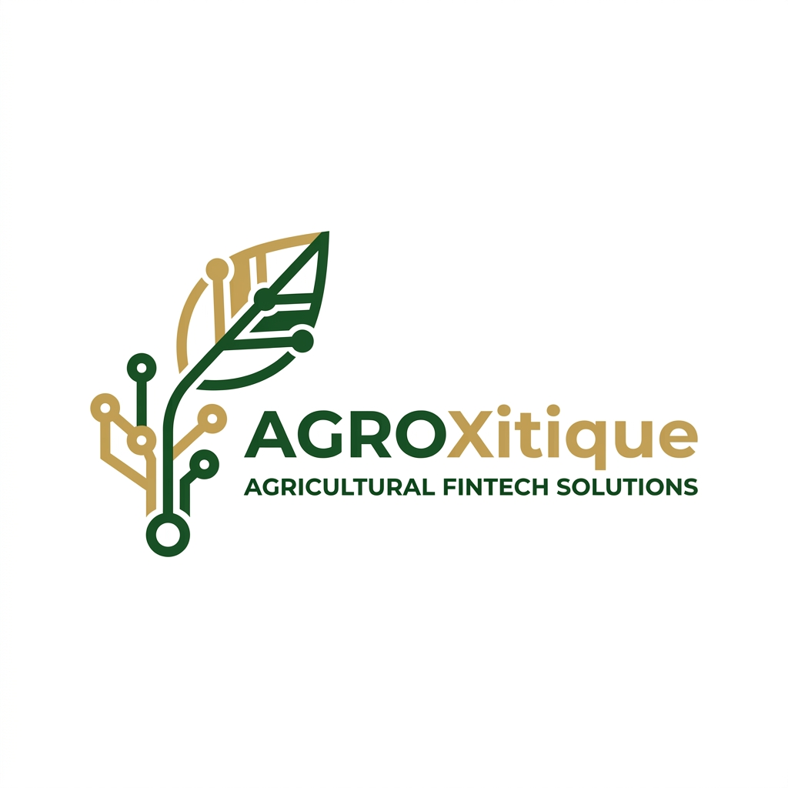

AgroXitique
Inovação em Micro-finanças Rurais
O fluxo realista abre o Xitique M-Pesa antes de chegar ao AgroXitique.
Contribuição, crédito e gestão colectiva são a camada própria do teu projecto.
Dados do Círculo DEMO
Use *150# para abrir o menu principal M-Pesa.
O teclado replica a experiência de um telemóvel básico num fluxo próximo do real.
Demonstração para o júri
Analytics LIVE
Motor Haskell GHCi
O score de crédito é calculado com Programação Funcional — funções puras garantem resultados reproduzíveis e auditáveis.
💡 O código Haskell completo está na pasta haskell/
e pode ser executado no GHCi.
Cadeira de Programação Funcional — UniLicungo 2025